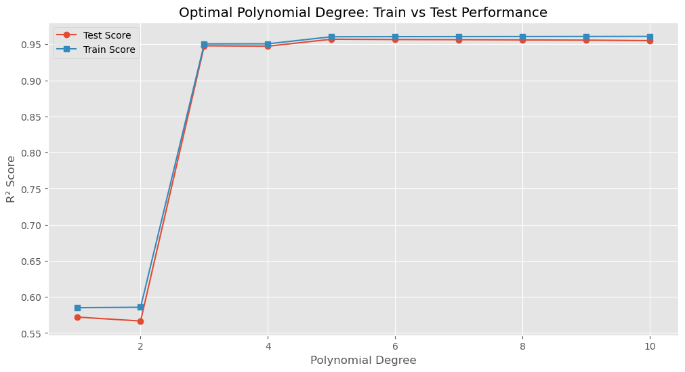
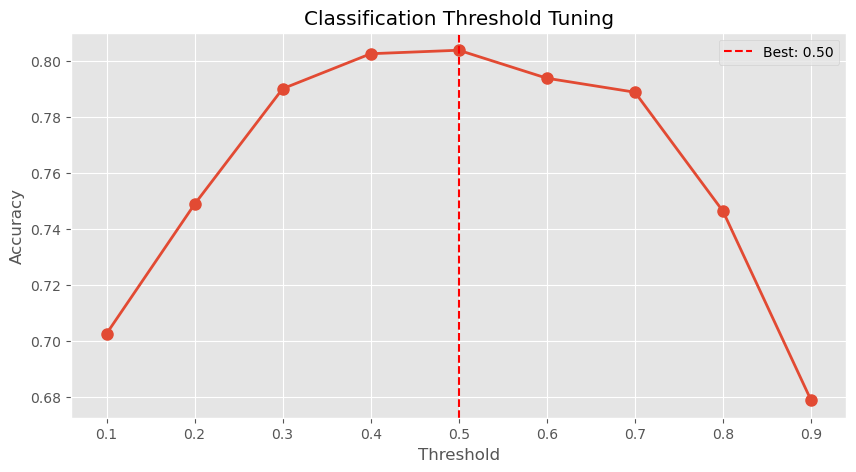

import numpy as np
import pandas as pd
import matplotlib.pyplot as plt
import seaborn as sns
from sklearn.model_selection import train_test_split, KFold, StratifiedKFold
from sklearn.model_selection import GridSearchCV, RandomizedSearchCV, cross_validate, cross_val_predict
from sklearn.linear_model import LinearRegression, LogisticRegression
from sklearn.preprocessing import PolynomialFeatures
from sklearn.pipeline import make_pipeline
from sklearn.metrics import mean_squared_error, accuracy_score
from sklearn.datasets import make_classification
%matplotlib inline
plt.style.use('ggplot')
from matplotlib.pylab import rcParams
rcParams['figure.figsize'] = 5, 413 Automated Hyperparameter Tuning
13.1 Introduction: From Manual Loops to Automated Search
In the previous notebook on Cross-Validation Fundamentals, we learned how to use cross_val_score to evaluate different polynomial degrees by writing a manual loop:
for degree in range(1, 11):
model = make_pipeline(PolynomialFeatures(degree), LinearRegression())
scores = cross_val_score(model, X_train, y_train, cv=5)
# Store and compare scores...While this approach works, it has limitations:
- Manual iteration through hyperparameters is tedious
- Multiple hyperparameters require nested loops
- No built-in tracking of results
- Difficult to parallelize efficiently
In this notebook, we’ll learn automated hyperparameter tuning techniques that make this process much more efficient and scalable.
13.1.1 Learning Objectives
By the end of this notebook, you will be able to:
- Use
GridSearchCVto automate exhaustive hyperparameter search - Apply
cross_validatefor detailed evaluation across multiple metrics - Use
RandomizedSearchCVas a faster alternative to grid search - Tune classification thresholds using specialized tools
- Choose the right tuning strategy for different scenarios
13.2 Preparing the Data
We’ll use the same polynomial regression example from Notebook 1 to demonstrate GridSearchCV.
# Generate polynomial regression data
x = np.array([i*np.pi/180 for i in range(360)])
np.random.seed(10)
y = np.sin(x) + np.random.normal(0, 0.15, len(x))
# Prepare for modeling
X = x.reshape(-1, 1)
X_train, X_test, y_train, y_test = train_test_split(X, y, test_size=0.2, random_state=42)
print(f"Training set size: {len(X_train)}")
print(f"Test set size: {len(X_test)}")Training set size: 288
Test set size: 7213.3 GridSearchCV: Automated Exhaustive Search
GridSearchCV automates the process of hyperparameter tuning by:
- Defining a grid of hyperparameter values to test
- Systematically evaluating every combination using cross-validation
- Returning the best parameters and trained model
13.3.1 How GridSearchCV Works
- Define a Grid of Hyperparameters:
Specify the hyperparameters and their possible values. - Evaluate All Combinations:
Test every possible combination systematically. - Cross-Validation for Model Evaluation:
For each combination, train and evaluate using CV. - Select the Best:
Choose the combination with the best validation performance.
13.3.2 Example: Finding Optimal Polynomial Degree
# Define the pipeline
model = make_pipeline(PolynomialFeatures(), LinearRegression())
# Define the hyperparameter grid
param_grid = {'polynomialfeatures__degree': np.arange(1, 11)}
# Define cross-validation strategy
cv = KFold(n_splits=5, shuffle=True, random_state=42)
# Perform Grid Search with Cross-Validation
grid_search = GridSearchCV(
model,
param_grid,
cv=cv,
scoring='r2',
return_train_score=True,
verbose=1,
n_jobs=-1 # Use all available cores
)
# Fit the model
grid_search.fit(X_train, y_train)Fitting 5 folds for each of 10 candidates, totalling 50 fitsGridSearchCV(cv=KFold(n_splits=5, random_state=42, shuffle=True),
estimator=Pipeline(steps=[('polynomialfeatures',
PolynomialFeatures()),
('linearregression',
LinearRegression())]),
n_jobs=-1,
param_grid={'polynomialfeatures__degree': array([ 1, 2, 3, 4, 5, 6, 7, 8, 9, 10])},
return_train_score=True, scoring='r2', verbose=1)In a Jupyter environment, please rerun this cell to show the HTML representation or trust the notebook. On GitHub, the HTML representation is unable to render, please try loading this page with nbviewer.org.
GridSearchCV(cv=KFold(n_splits=5, random_state=42, shuffle=True),
estimator=Pipeline(steps=[('polynomialfeatures',
PolynomialFeatures()),
('linearregression',
LinearRegression())]),
n_jobs=-1,
param_grid={'polynomialfeatures__degree': array([ 1, 2, 3, 4, 5, 6, 7, 8, 9, 10])},
return_train_score=True, scoring='r2', verbose=1)Pipeline(steps=[('polynomialfeatures', PolynomialFeatures(degree=5)),
('linearregression', LinearRegression())])PolynomialFeatures(degree=5)
LinearRegression()
13.3.3 Exploring GridSearchCV Results
GridSearchCV stores detailed results in the cv_results_ attribute, which we can convert to a DataFrame for analysis.
# Convert results to DataFrame
cv_results = pd.DataFrame(grid_search.cv_results_)
# Display key columns
pd.set_option('display.float_format', '{:.6f}'.format)
cv_results[["param_polynomialfeatures__degree", "mean_test_score", "mean_train_score", "std_test_score"]]| param_polynomialfeatures__degree | mean_test_score | mean_train_score | std_test_score | |
|---|---|---|---|---|
| 0 | 1 | 0.572085 | 0.585029 | 0.046098 |
| 1 | 2 | 0.566630 | 0.585655 | 0.051793 |
| 2 | 3 | 0.947902 | 0.950554 | 0.006520 |
| 3 | 4 | 0.947373 | 0.950681 | 0.006329 |
| 4 | 5 | 0.956997 | 0.960442 | 0.004993 |
| 5 | 6 | 0.956598 | 0.960604 | 0.004889 |
| 6 | 7 | 0.956398 | 0.960669 | 0.004968 |
| 7 | 8 | 0.956063 | 0.960754 | 0.004480 |
| 8 | 9 | 0.955732 | 0.960827 | 0.004856 |
| 9 | 10 | 0.955043 | 0.960917 | 0.004915 |
13.3.4 Visualizing Training vs Test Scores
Let’s plot the scores to identify the optimal degree and detect overfitting.
# Plotting cv results
plt.figure(figsize=(12, 6))
plt.plot(cv_results["param_polynomialfeatures__degree"], cv_results["mean_test_score"], 'o-', label='Test Score')
plt.plot(cv_results["param_polynomialfeatures__degree"], cv_results["mean_train_score"], 's-', label='Train Score')
plt.xlabel('Polynomial Degree')
plt.ylabel('R² Score')
plt.title("Optimal Polynomial Degree: Train vs Test Performance")
plt.legend(loc='best')
plt.grid(True)
plt.show()
13.3.5 Accessing the Best Results
GridSearchCV provides convenient attributes to access the best parameters and model.
# Print out the best hyperparameters and the best score
print("Best Parameters:", grid_search.best_params_)
print("Best CV Score (R²):", grid_search.best_score_)
print("Best Estimator:", grid_search.best_estimator_)
# Evaluate on test set
test_score = grid_search.score(X_test, y_test)
print(f"\nTest Set R²: {test_score:.4f}")Best Parameters: {'polynomialfeatures__degree': 5}
Best CV Score (R²): 0.9569966855989479
Best Estimator: Pipeline(steps=[('polynomialfeatures', PolynomialFeatures(degree=5)),
('linearregression', LinearRegression())])
Test Set R²: 0.956513.3.6 Benefits of GridSearchCV
✅ No manual loops: Automates the entire search process
✅ Parallel processing: Uses n_jobs=-1 to leverage multiple CPU cores
✅ Comprehensive results: Stores all scores, parameters, and timing information
✅ Best model ready: best_estimator_ is already trained and ready to use
✅ Guaranteed optimal: Tests every combination in the grid
13.3.7 Limitations
⚠️ Computationally expensive: Exhaustive search can be slow with many hyperparameters
⚠️ Grid design: Requires manual specification of parameter ranges
⚠️ Curse of dimensionality: Number of combinations grows exponentially
13.4 Using cross_validate for Multiple Metrics
While GridSearchCV optimizes based on a single scoring metric, cross_validate allows you to evaluate multiple metrics simultaneously. This is helpful when you want to assess different aspects of model performance (e.g., R², MSE, MAE).
13.4.1 Evaluating with Multiple Metrics
# Use the best model from GridSearchCV
best_model = grid_search.best_estimator_
# Define multiple scoring metrics
scoring = {
'r2': 'r2',
'neg_mse': 'neg_mean_squared_error',
'neg_mae': 'neg_mean_absolute_error'
}
# Perform cross-validation with multiple metrics
cv_results_multi = cross_validate(
best_model,
X_train,
y_train,
cv=cv,
scoring=scoring,
return_train_score=True
)
# Convert to DataFrame for easy viewing
results_df = pd.DataFrame(cv_results_multi)
print("Cross-Validation Results with Multiple Metrics:")
print(results_df)
# Print average scores
print("\nAverage Scores:")
print(f"R²: {results_df['test_r2'].mean():.4f} (±{results_df['test_r2'].std():.4f})")
print(f"MSE: {-results_df['test_neg_mse'].mean():.4f} (±{results_df['test_neg_mse'].std():.4f})")
print(f"MAE: {-results_df['test_neg_mae'].mean():.4f} (±{results_df['test_neg_mae'].std():.4f})")Cross-Validation Results with Multiple Metrics:
fit_time score_time test_r2 train_r2 test_neg_mse train_neg_mse \
0 0.001005 0.001999 0.958779 0.960044 -0.022048 -0.020852
1 0.001000 0.002004 0.964405 0.958398 -0.018169 -0.021653
2 0.000998 0.002105 0.955065 0.961197 -0.022904 -0.020553
3 0.001037 0.001140 0.957639 0.960553 -0.022533 -0.020679
4 0.001023 0.000998 0.949095 0.962019 -0.025200 -0.020176
test_neg_mae train_neg_mae
0 -0.120847 -0.112148
1 -0.103464 -0.117049
2 -0.118733 -0.114133
3 -0.116784 -0.113619
4 -0.126727 -0.111725
Average Scores:
R²: 0.9570 (±0.0056)
MSE: 0.0222 (±0.0025)
MAE: 0.1173 (±0.0086)13.5 RandomizedSearchCV: Faster Alternative
When the hyperparameter space is large, GridSearchCV can become prohibitively expensive. RandomizedSearchCV offers a faster alternative by randomly sampling a specified number of parameter combinations.
13.5.1 How RandomizedSearchCV Works
Instead of testing every combination, it:
- Randomly samples
n_itercombinations from the parameter distributions - Evaluates each using cross-validation
- Returns the best performing combination
13.5.2 When to Use RandomizedSearchCV
✅ Large hyperparameter space: Many parameters or continuous ranges
✅ Time constraints: Need faster results
✅ Initial exploration: Quick search before fine-tuning with GridSearchCV
13.5.3 Example: Random Search for Polynomial Degree
from scipy.stats import randint
# Define the pipeline
model_random = make_pipeline(PolynomialFeatures(), LinearRegression())
# Define parameter distributions (can use continuous or discrete distributions)
param_distributions = {
'polynomialfeatures__degree': randint(1, 15) # Sample from integers 1 to 14
}
# Perform Randomized Search
random_search = RandomizedSearchCV(
model_random,
param_distributions,
n_iter=10, # Number of random combinations to try
cv=cv,
scoring='r2',
return_train_score=True,
random_state=42,
n_jobs=-1
)
random_search.fit(X_train, y_train)
# Display results
print("Best Parameters (Random Search):", random_search.best_params_)
print("Best CV Score (Random Search):", random_search.best_score_)
print("\nCompare with GridSearchCV:")
print("GridSearchCV Best Score:", grid_search.best_score_)Best Parameters (Random Search): {'polynomialfeatures__degree': 5}
Best CV Score (Random Search): 0.9569966855989479
Compare with GridSearchCV:
GridSearchCV Best Score: 0.956996685598947913.5.4 GridSearchCV vs RandomizedSearchCV
| Aspect | GridSearchCV | RandomizedSearchCV |
|---|---|---|
| Search Strategy | Exhaustive (all combinations) | Random sampling |
| Speed | Slower (O(n^k) for k parameters) | Faster (O(n_iter)) |
| Optimality | Guaranteed best within grid | Approximate best |
| Best For | Small grids, fine-tuning | Large spaces, exploration |
| Parallelization | Yes (n_jobs=-1) |
Yes (n_jobs=-1) |
Recommendation: Start with RandomizedSearchCV for quick exploration, then refine with GridSearchCV in a narrower range.
13.6 Tuning Classification Thresholds
In classification problems, the default threshold is typically 0.5 (i.e., predict class 1 if probability > 0.5). However, this default may not be optimal for all problems, especially when:
- Classes are imbalanced
- Different types of errors have different costs (e.g., false positives vs false negatives)
- You want to optimize for a specific metric (F1-score, precision, recall)
Cross-validation can help find the optimal threshold.
13.6.1 Generating Classification Data
# Generate classification dataset
X_class, y_class = make_classification(
n_samples=1000,
n_features=20,
n_informative=15,
n_redundant=5,
random_state=42
)
X_train_class, X_test_class, y_train_class, y_test_class = train_test_split(
X_class, y_class, test_size=0.2, random_state=42
)
# Train a logistic regression model
logit_model = LogisticRegression(max_iter=1000, random_state=42)
logit_model.fit(X_train_class, y_train_class)
# Default threshold (0.5) performance
y_pred_default = logit_model.predict(X_test_class)
print(f"Default threshold (0.5) accuracy: {accuracy_score(y_test_class, y_pred_default):.4f}")Default threshold (0.5) accuracy: 0.825013.6.2 Method 1: Using TunedThresholdClassifierCV (sklearn >= 1.5)
Scikit-learn provides TunedThresholdClassifierCV to automatically find the best threshold through cross-validation.
from sklearn.model_selection import TunedThresholdClassifierCV
# Define cross-validation strategy
cv_strat = StratifiedKFold(n_splits=5, shuffle=True, random_state=42)
# Define TunedThresholdClassifierCV
tuned_clf = TunedThresholdClassifierCV(
estimator=logit_model,
scoring="f1", # Optimize for F1-score
cv=cv_strat
)
# Fit the model
tuned_clf.fit(X_train_class, y_train_class)
# Print the best threshold and corresponding score
print(f"Best threshold: {tuned_clf.best_threshold_:.3f}")
print(f"Best F1-score (CV): {tuned_clf.best_score_:.4f}")
# Evaluate on test set
y_pred_tuned = tuned_clf.predict(X_test_class)
from sklearn.metrics import f1_score
print(f"Test set F1-score: {f1_score(y_test_class, y_pred_tuned):.4f}")Best threshold: 0.384
Best F1-score (CV): 0.8142
Test set F1-score: 0.807913.6.3 Method 2: Manual Threshold Tuning with cross_val_predict
For more control, you can manually test different thresholds using cross_val_predict.
# Test thresholds from 0.1 to 0.9
thresholds = np.arange(0.1, 1.0, 0.1)
scores = []
for threshold in thresholds:
# Get probability predictions via cross-validation
y_pred_class_prob = cross_val_predict(
logit_model,
X_train_class,
y_train_class,
cv=5,
method='predict_proba'
)[:, 1]
# Apply threshold
y_pred_class = (y_pred_class_prob > threshold).astype(int)
# Calculate accuracy
scores.append(accuracy_score(y_train_class, y_pred_class))
# Create results DataFrame
df_scores = pd.DataFrame({'threshold': thresholds, 'accuracy': scores})
print("Threshold Tuning Results:")
print(df_scores.to_string(index=False))
# Find best threshold
best_threshold = thresholds[np.argmax(scores)]
best_score = max(scores)
print(f"\nBest threshold: {best_threshold:.2f}")
print(f"Best CV accuracy: {best_score:.4f}")Threshold Tuning Results:
threshold accuracy
0.100000 0.702500
0.200000 0.748750
0.300000 0.790000
0.400000 0.802500
0.500000 0.803750
0.600000 0.793750
0.700000 0.788750
0.800000 0.746250
0.900000 0.678750
Best threshold: 0.50
Best CV accuracy: 0.8037# Visualize threshold vs score
plt.figure(figsize=(10, 5))
plt.plot(thresholds, scores, 'o-', linewidth=2, markersize=8)
plt.axvline(best_threshold, color='r', linestyle='--', label=f'Best: {best_threshold:.2f}')
plt.xlabel('Threshold')
plt.ylabel('Accuracy')
plt.title('Classification Threshold Tuning')
plt.legend()
plt.grid(True)
plt.show()
13.7 Summary
In this notebook, we learned automated hyperparameter tuning techniques that make model optimization more efficient:
13.7.1 Key Concepts
- GridSearchCV
- Performs exhaustive search over all parameter combinations
- Guarantees finding the best parameters within the grid
- Best for small to moderate hyperparameter spaces
- Use
n_jobs=-1for parallel processing
- cross_validate
- Evaluates models using multiple metrics simultaneously
- Provides comprehensive performance assessment
- Returns both training and test scores
- Useful for understanding different aspects of model performance
- RandomizedSearchCV
- Randomly samples parameter combinations
- Much faster than GridSearchCV for large spaces
- Good for initial exploration before fine-tuning
- Accepts probability distributions for continuous parameters
- Threshold Tuning
- Classification thresholds can be optimized beyond the default 0.5
- Use
TunedThresholdClassifierCVfor automated tuning (sklearn >= 1.5) - Manual tuning with
cross_val_predictprovides more control - Important for imbalanced datasets or specific business objectives
13.7.2 Best Practices
✅ Start with RandomizedSearchCV for large hyperparameter spaces
✅ Refine with GridSearchCV in a narrower range
✅ Always use return_train_score=True to detect overfitting
✅ Use n_jobs=-1 to leverage all CPU cores
✅ Evaluate with multiple metrics using cross_validate
✅ Consider threshold tuning for classification problems
13.7.3 What’s Next?
In the next notebook, we’ll explore regularization-specific cross-validation tools like RidgeCV, LassoCV, and ElasticNetCV. These specialized methods are particularly efficient for tuning regularization strength (alpha) and connect directly back to the regularization techniques we studied in the Regularization chapter.